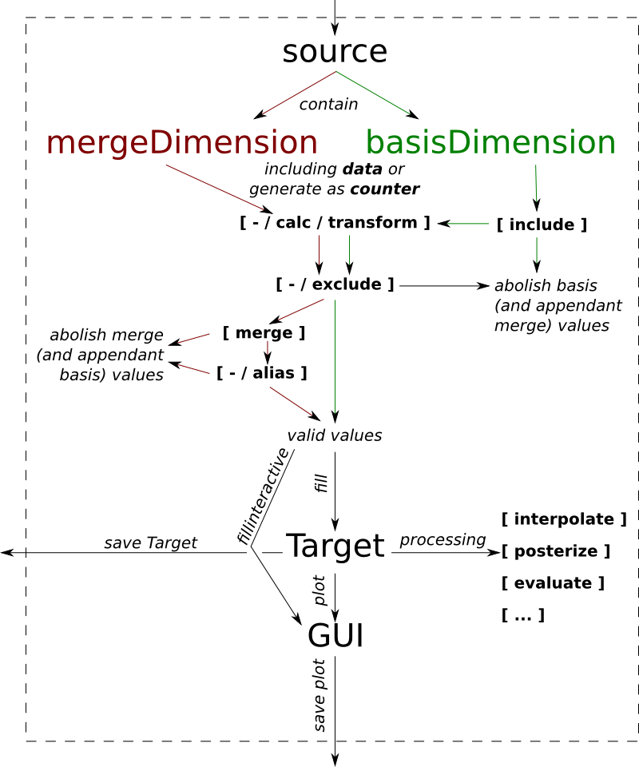

The basic idea of diaGrabber is shown in the following image and will be described now.
Imagine to have some data, maybe stored in a file or generated trough a stream. diaGrabber calls this source. Each source includes values sorted in basis- and mergeDimensions.
...counter
...
The values of the source were stored in a target which is usualy a matrix. See mod::diaGrabber.target._matrix.matrixBase for more information. It is possible to filter the values before they are stored in a target. Some of those filters are:
- include
- ...
To get all possible functions of a module you can have a look at the Application programming interface of diaGrabber at The diaGrabber-API:. Another possibility is to (install and) open an interactive python-shell, like iPython or IDLE and to import diaGrabber in it via:
import diGrabber
diaGrabber.
and then pressing the [TAB]-key shows all possible classes and functions including its docstrings.
To import all necassary moduls directly type:
from diaGrabber import source, target, plot
from diaGrabber.source.methods import merge, calc, exclude, transform